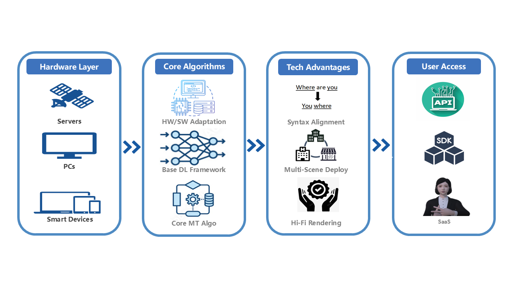

Undergraduate at Tongji University. I am driven by the transition from logic to intelligence. I move beyond simply "using algorithms" to building dependable systems where AI not only generates content but understands, verifies, and self-repairs.
Our comprehensive calligraphy dataset (formerly Calli-Tongji) has been significantly upgraded and submitted to ECCV 2026 as HCSU: A Dataset and Benchmark for Fine-Grained Historical Calligraphy Style Understanding. HCSU systematically decouples authentic ink manuscripts from stone rubbings to resolve the "modal mixture" problem, featuring 39,307 meticulously curated character images with hierarchical expert-written aesthetic descriptions.

Our research constructing a high-fidelity benchmark for long-form financial research reports has been officially submitted to SIGIR 2026. The dataset introduces fine-grained multi-step numerical calculation and logic-driven rule-matching scenarios based on real market data, effectively evaluating causal reasoning, factual grounding, and risk identification in financial LLMs.
Our research on MAVEN (Multi-Agent Verification and Elaboration Network) has been submitted to SIGIR 2026. This work introduces a novel reasoning-hop-based routing mechanism that optimizes efficiency by dynamically selecting pathways. The framework achieved SOTA factual accuracy and justification plausibility on complex reasoning benchmarks.

Our comprehensive research on digitalization of calligraphy heritage was officially recognized at the 1st CCF AI for Humanities Conference. The Calli-Tongji Dataset was honored as a Top 40 Recommended Dataset for its high-fidelity preservation. Alongside it, we presented "The Flowing Grid", an interactive generative web archive that transforms static history into a millisecond-level visual stream, demonstrating the full transition from Data Logic to Aesthetic Intelligence.
"The true charm of artificial intelligence does not lie in 'how powerful the model is', but in 'how it is truly utilized well'."
My research adopts a dual perspective: looking at the algorithmic logic of the model while simultaneously addressing the underlying system logic. Whether mitigating hallucinations or orchestrating multi-agent systems, I aim to create AI that is not just innovative, but interpretable, controllable, and engineer-ready.
Tongji University (Supervisor: Prof. Dawei Cheng)
Constructed a benchmark for long-form financial reports, focusing on causal reasoning, factual grounding, and risk identification.
Built a structured QA dataset with numerical reasoning challenges. Paper officially submitted to SIGIR 2026.
Tongji University (Supervisor: Prof. Dawei Cheng)
Developed a routing mechanism enabling dynamic path selection between fast and full reasoning pipelines based on task complexity.
Integrated asynchronous web verification and structured deliberation loops to improve factual consistency.
Purdue University (Supervisor: Prof. Tianyi Zhang)
Hybrid Framework combining Transformer-based detectors with execution verification.
Improved absolute code accuracy by 9–20% on HumanEval, MBPP, and BigCodeBench.
Tongji University (Supervisor: Prof. Chen Ye)
Built a ViT-based framework for 400+ styles, utilizing ArcFace loss for high-precision style discrimination.
Dataset upgraded to HCSU and submitted to ECCV 2026. Previously selected as CCF Top 40 Recommended.
Shanghai Bright Power Semiconductor
Developed C-based testing programs for chip batches and analyzed performance yield under extreme conditions.
This research addresses the interpretability crisis in financial AI by constructing a high-fidelity benchmark for long-form financial research reports. I led the development of the deep analysis module, which transcends simple retrieval by targeting causal reasoning, factual grounding, risk identification, and comparative analysis. The core contribution involves a structured QA dataset designed with rule-based and numerical reasoning challenges that test the limits of current Large Language Models in financial document understanding.
Defining fine-grained metrics across 4 dimensions: Causality Chain, Factual Grounding, Risk Potential, and Entity Comparison.
Implementing multi-step numerical calculation and logic-driven rule-matching scenarios based on real market data.
MAVEN is a sophisticated multi-agent reasoning architecture designed to emulate System 2 thinking. It integrates five specialized roles: Planner, Researcher, Skeptic, Judge, and Stylist to support multi-stage planning and consensus synthesis. The core innovation is a reasoning-hop-based routing mechanism, which enables the system to dynamically select pathways between fast and full reasoning pipelines based on the complexity of the task, significantly improving factual consistency on datasets like OBQA and TruthfulQA.
This work tackles the "silent" logic errors in LLM-based code generation. I designed a Hybrid Feedback Framework that integrates a Transformer-based detector—using token, syntax, and confidence features—with execution-based verification. To solve repetitive error loops, I implemented a “reset thinking” mechanism and structured hybrid prompts, achieving a 9-20% improvement in absolute code accuracy across benchmarks including HumanEval, MBPP, LiveCodeBench, and BigCodeBench.

Designed word order transformation logic for video synthesis and enhanced gesture precision by comparing digital human motions with demonstrations.